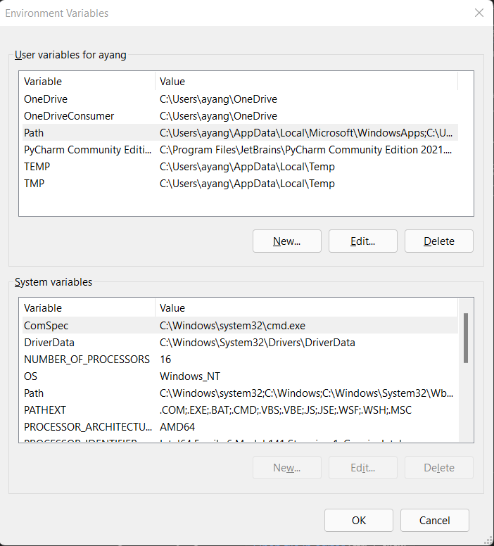
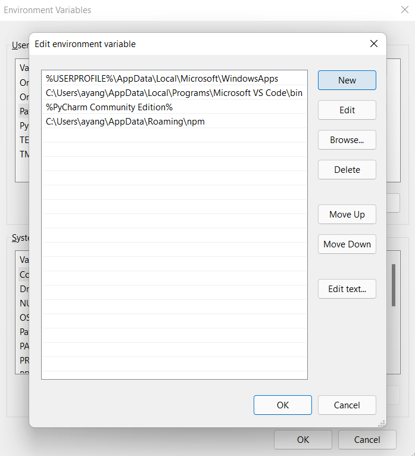
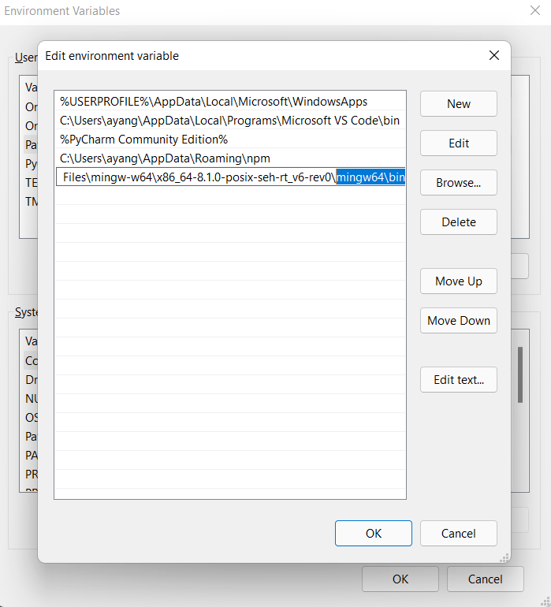

Installing and Running Harmony
Harmony requires the following to be installed:
- Python (version 3.6 or higher)
- Graphviz
- C Compiler (potentially potential)
In the following instructions, Windows users using WSL should follows instructions for Linux.
For users of a Cornell CS Department Linux machine, e.g. <netid>@ugclinux.cs.cornell.edu, you likely do not need to install Python3 or Graphviz because they may be available already. However, you can verify that they are available by running python3 --version and dot -V respectively.
Installing Python3
Harmony requires Python (version 3.6 or higher) to be installed. If you do not have Python3 already installed, download and install Python depending on your OS (Windows, Mac, Linux, etc) on the official Python site. Be sure to download the installer for Python version 3.6 or higher.
In the installer, the default installation settings will also add pip. If you choose to run the installer with custom settings, be sure that pip gets installed.
On the command line, you can check if Python has been successfully installed by running the following:
python3 --version
Installing Graphviz
Harmony uses Graphviz to visualize the state changes in a program. For example, the following Harmony program can produce the subsequent graph.
# Filename: example.hny
def a():
print "A"
def b():
print "B"
spawn a()
spwan b()
# Run with [harmony -o example.png example.hny]

Instructions for installing the latest version of Graphviz can be found here.
For Windows users, when running the installer, make sure to select the option Add Graphviz to the system PATH for current user so that the command dot is available to produce the graphs.
Install Harmony via Pip
After installing python, you should also be able to use the command pip. Run the following command to get the latest version of Harmony:
pip install harmony-model-checker
For Windows Users
For Windows users: you may encounter the error message along the lines of the following when installing harmony-model-checker:
error: Microsoft Visual C++ 14.0 or greater is required. Get it with
"Microsoft C++ Build Tools": <link to visual studio - cpp build tools>
This is to be expected if you had not installed the "Microsoft C++ Build Tools" before. Navigate to the outputted link and press Download Build Tools to download the installer. When you run the installer, you will encounter a selection screen such as the following:

Select Desktop development with C++ in the Desktop & Mobile section and then install.

Note that this will likely take a while. When it finishes installing, run pip install harmony-model-checker again.
For CS Deparment Linux Machine Users
It may be possible that pip is not available on your Linux machine. In that case, you will need to download and build the source code directly. This can be done via the following commands:
# Installs version 1.2.2376
wget https://files.pythonhosted.org/packages/2c/cb/0a1d4dedf7f4dc552da831b28bde842c74bed251d75dd58d9f56fc688b04/harmony_model_checker-1.2.2376.tar.gz
gzip -d harmony_model_checker-1.2.2376.tar.gz
tar -xf harmony_model_checker-1.2.2376.tar
cd harmony_model_checker-1.2.2376
python3 setup.py install --user
Afterward, you will likely need to add the directory with the harmony command to your environment PATH. You can get the directory with the script by running python3 -m site --user-base, which will output something like /home/<net-id>/.local. Add this directory to your PATH (See here for more information on how to do so).
Adding Scripts to PATH
When installing Harmony, you may encounter a warning on the command line of something like the following:
WARNING: The script harmony is installed in '/path/with/harmony/' which is not on PATH.
Consider adding this directory to PATH or, if you prefer to suppress this warning, use --no-warn-script-location.
If you do not see this warning, then you can continue.
Otherwise, add that path displayed in the message to your PATH variable. See here for extra information on editing the PATH variable.
Command-Line Harmony
Once you have installed harmony-model-checker, you should be able to use the harmony command on your command line.
You check which version you have by running harmony --version.
Harmony on VSCode
Harmony is available as an extension on VSCode, which includes syntax highlighting and basic parser checks.
Please see here for a guide on the basic usage of the VSCode extension.
Updating Harmony
Harmony can be updated by running the following pip command on the command line:
pip install --upgrade harmony-model-checker
In Harmony versions 1.2.0 and higher, the compiler will output a warning if the currently installed version of Harmony is outdated and an updated one can be installed.
Modifying your PATH variable
Windows:
Search for Edit environment variables in the search bar. You can add it either to the Path associated with your account or the system Path.

Select the variable Path in the user variables section and then click "Edit", which opens a new pane.

Click "New" to add a new path, for example, the directory containing gcc or the pip scripts.

Complete your changes by pressing "Ok".
MacOS / Linux:
Open the Terminal application. Check which shell is running on the Terminal. You check which one you have by running echo "$SHELL".
The following instructions are for bash and zsh. Open the ~/.bash_profile file (for bash users) or the ~/.zsh_profile file (for zsh users) using your favorite text editor, such as vim, nano, emacs, or TextEdit. Then, add the following command to the end of the file, where /path/to/add is to be substituted:
export PATH=$PATH:/path/to/add/
Save the file and restart the Terminal to observe the change.